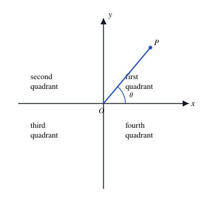

Based on Cambridge International AS & A Level Mathematics: Pure Mathematics 1 Coursebook (Sue Pemberton, series editor Julian Gilbey), Chapter 5 Trigonometry, printed pp.121–123 (physical PDF page = printed page + 12). Own wording and new numbers, following the coursebook definition of an angle as a rotation and the four quadrants.
Key words: general angle, quadrant, basic angle, reference angle
To use sine, cosine and tangent for angles other than acute angles, a more general definition is needed. An angle is a measure of the rotation of a line segment \(OP\) about a fixed point \(O\). The angle is measured from the positive \(x\)-direction. An anticlockwise rotation is taken as positive, and a clockwise rotation is taken as negative.
The plane is divided into four quadrants. The angle \(\theta\) is said to be in the quadrant in which \(OP\) lies.

The acute angle that \(OP\) makes with the \(x\)-axis is called the basic angle, or the reference angle. For example:
Coursebook, 5.2, Worked example 5.3 style. New angle \(200^\circ\).
Draw a diagram showing the quadrant in which the rotating line \(OP\) lies for a rotation of \(200^\circ\), and state the acute angle that \(OP\) makes with the \(x\)-axis.
Answer: third quadrant; basic angle \(20^\circ\)
Coursebook, 5.2, Worked example 5.3 style. New angle \(-150^\circ\).
State the quadrant in which \(OP\) lies for a rotation of \(-150^\circ\), and find the basic angle.
Answer: third quadrant; basic angle \(30^\circ\)
Coursebook, Exercise 5B style. New data: basic angle \(40^\circ\), second quadrant, \(0^\circ\leqslant\theta\leqslant 360^\circ\).
The basic angle of \(\theta\) is \(40^\circ\), and \(\theta\) lies in the second quadrant with \(0^\circ\leqslant\theta\leqslant 360^\circ\). Find \(\theta\).
Answer: \(140^\circ\)
There is no official Cambridge 9709 Paper 1 item that is solely on the general definition of an angle, the quadrants and the basic angle in this subsection. Questions that use the sine, cosine or tangent of a related angle, given one ratio, are in 5.3.
What is the basic angle of \(150^\circ\), in degrees?
Answer: \(30\)
What is the basic angle of \(210^\circ\), in degrees?
Answer: \(30\)
The basic angle of \(\theta\) is \(50^\circ\), and \(\theta\) is in the second quadrant with \(0^\circ\leqslant\theta\leqslant 360^\circ\). Find \(\theta\), in degrees.
Answer: \(130^\circ\)